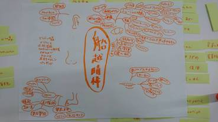
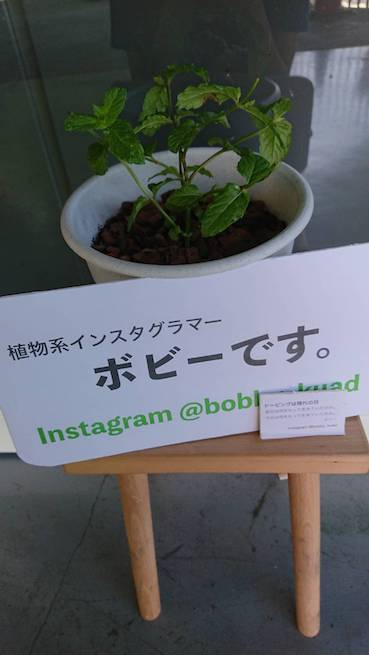
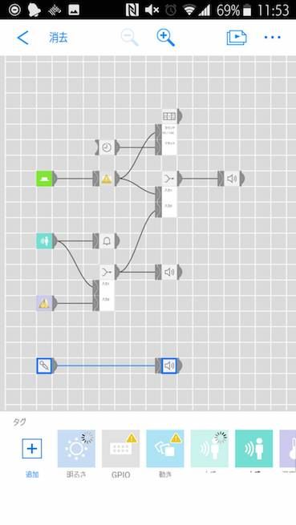

マインドマップ
mesh

pintarestで好きな画像を100個集める。
ブレインストーミングで付箋に書き出していく。
自分のマインドマップを作り分析する。
マインドマップをみて
自分はミュージカルや陸上、靴製作など足に関係しているものに興味があることがわかった
意外にもインドアよりかはアクティブな面もあり体を動かして何かを得る方が好き
衣食住として見た時食に関してはこだわりはあるが偏っていて住のこだわりも特になく衣がつよめ
mesh.植物のボビー
 
BANと製作
[人感]人がボビーの前に来たら反応して話しかける
[湿度]湿度が低い（水が欲しい）時に人が来た場合水を求める声を出す.通知がスマホに来る
[ボタン]連動して一回分の水が流れありがとうと言う
ボタンを押された回数をカウンターで１週間分記録
振り返って
元々は撮った画像をインスタに乗っけたかったが、ギミックが探した限りではなく
作れなかった。ボビーをカスタムすることは今後クロステックに気軽に来てもらう
為にも継続したい。トライアンドエラーはしっかりできできないとこを明確にして
次に繋げられた。